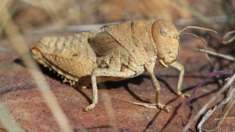

Business

One of Germany's most senior banking regulators has warned London that it is likely to lose its role as "the gateway to Europe" for vital financial services.
Dr Andreas Dombret, executive board member for the German central bank, the Bundesbank, said that even if banking rules were "equivalent" between the UK and the rest of the European Union, that was "miles away from access to the single market".
Education and Family

One in five students in independent schools received extra time to complete GCSE and A-level exams last year.
The proportion was significantly higher than those who received the special measure in state schools where the figure is fewer than one in eight.
Entertainment/Arts

Prominent human rights lawyer Amal Clooney and her husband, award-winning actor George, are expecting twins, Matt Damon has confirmed.
Speaking to Entertainment Tonight Canada, the actor explained Clooney had told him the news while they were working together last autumn.
Science/Environment

The first comprehensive assessment of Europe's crickets and grasshoppers has found that more than a quarter of species are being driven to extinction.
According to the International Union for Conservation of Nature (IUCN), the insect group is the most threatened of those assessed so far in Europe.